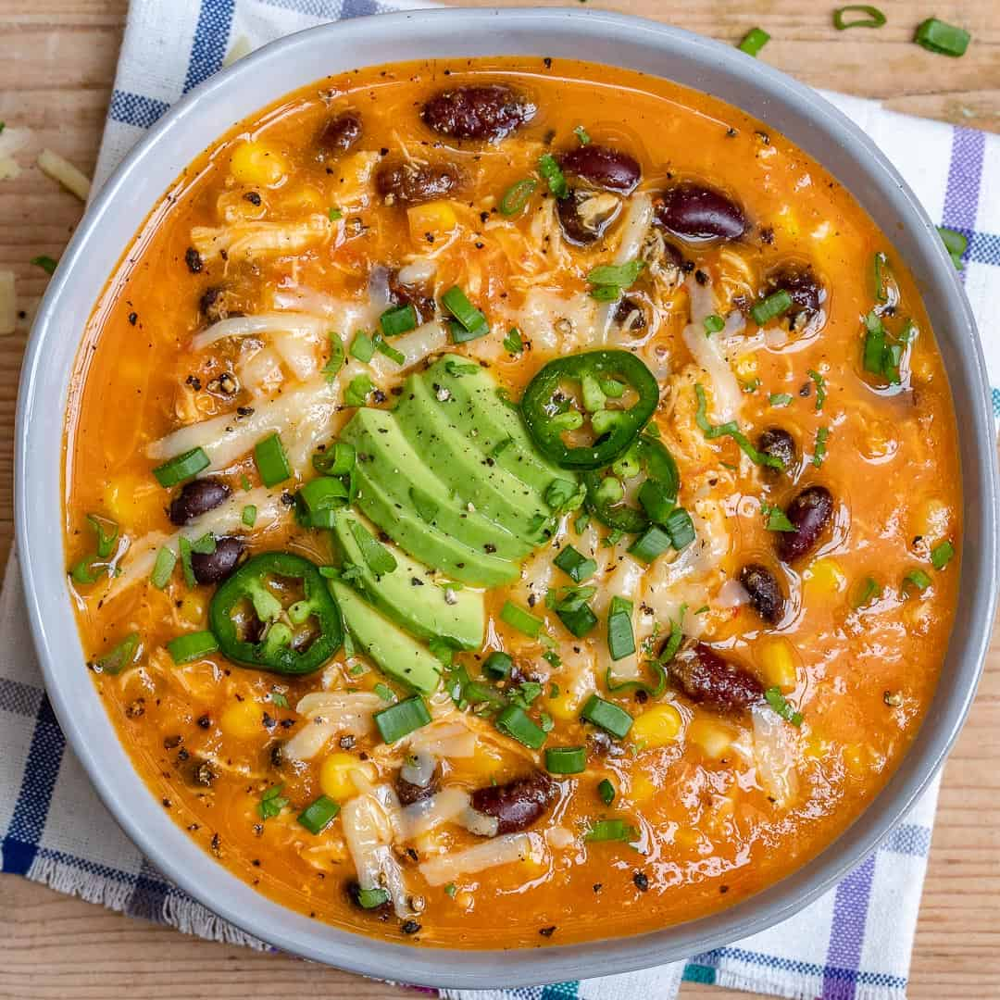

Chicken Enchilada Soup
Back to Home Page

Description:
Make chicken enchilada soup in your crockpot for a tasty, hot meal! We like to top each bowl with crushed corn tortilla chips, shredded cheese, or chopped green onions — and sometimes all three.
"I used this recipe but i substituted the chicken for lean ground turkey, added 1 can 14.5oz. of red kidney beans and instead of using enchilada sauce i used 8 oz. of mild salsa and it tasted so good."
"Great taste! I added a can of black beans and used frozen corn, otherwise followed the recipe as is. Will make this again!"
"I have been making this for a while and this is the best chicken (tortilla soup) recipe I have found. I have made adjustments and added 1 can black beans (rinsed) and 2 TBSP dry ranch dressing mix and 1 can Rotel. AMAZING."
Ingredients:
-
1 pound skinless, boneless chicken breast halves
-
1 (15.25 ounce) can whole kernel corn, drained
-
1 (14.5 ounce) can diced tomatoes, undrained
-
1 (14.5 ounce) can chicken broth
-
1 (10 ounce) can enchilada sauce
-
1 white onion, chopped
-
1 (4 ounce) can diced green chiles
-
¼ cup chopped fresh cilantro
-
3 cloves garlic, minced
-
2 bay leaves
-
1 teaspoon ground cumin
-
1 teaspoon chili powder
-
1 teaspoon salt
-
¼ teaspoon ground black pepper
Steps:
-
Rinse chicken breasts and pat dry. Place chicken into the bottom of a slow cooker. Add corn, tomatoes, chicken broth, enchilada sauce, onion, green chiles, cilantro, garlic, bay leaves, cumin, chili powder, salt, and pepper. Cover and cook on Low for 6 hours.
-
Transfer chicken to a large plate, then shred meat with two forks. Return shredded chicken to the slow cooker, stir to combine, and continue cooking for 30 to 60 more minutes. Discard bay leaves before serving.